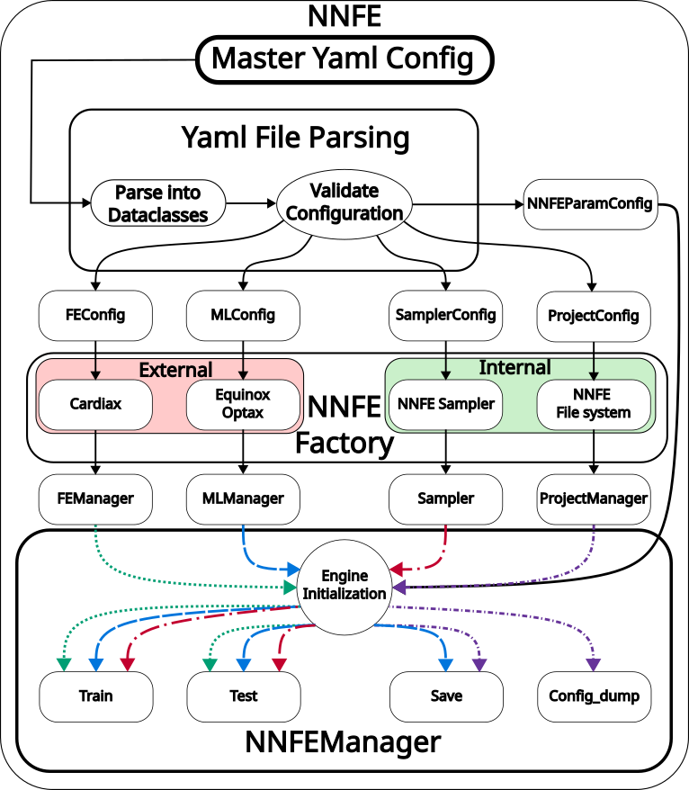

Configuration Files¤
Configurations for CARDIAX-NNFE are a user friendly way of training a network on basic solution mappings. While they aren't required, the configuration structure is what allows for reproducibility, which is crucial for developing new methodoligies. The config files that then generate the appropriate managers can be used independently as well.
The main structure for NNFE follows the figure below. A master configuration file is created to begin. This file is what generates NNFE through the from_yaml class method. Then in the from_yaml function, the yaml file parses into appropriate subdictionaries to spawn the relevant Manager objects. These objects are then passed to NNFE, initializing the object.

Configuration Walkthrough¤
Here, we will explain the generic aspects of each component of the configuration files. While the configuration file can be just one large yaml file, we broke it into three pieces for convience. There is the main NNFE file that handles more of the high level architecture. Then this main file points to the FE and ML configuration files, so these can be manipulated more easily. For more concrete examples, please look at the demos.
Project¤
The first manager to spawn is the ProjectManager. This object helps maintain the reproducible results by spawning a new directory at each instance. A parent directory is chosen, and on each run inside /parent_dir/name/..., a random key is created. This random key makes sure that each run is unique and prevents accidentally overwriting previous tests. A directory structure is then created to store relevant information.
project:
name: str # Name of the project repo where to spawn new directory
parent_dir: str # Parent directory to save the Results to: /parent_dir/Results/...
save: bool # Whether to save the run or not
print_progress: int # How often to print loss
save_progress: int # When to save the model
extra_dirs:
results_dir: str # Save post-process results
model_dir: str # Save models
plot_dir: str # Save plots
log_dir: str # Save logs
config_dir: str # Save configs
trained_weights_path: str # Load trained weights
Finite Element¤
The finite element configuration file is responsible for spawning the object responsible for the residual construction of NNFE. It's also described in more depth in CARDIAX because it's the same as the input files used there. We will show it here as well for completeness, but for more details on the FE implementation, please look at the CARDIAX repo.
FE: str # Config file for FE
This is the contents of the FE config file.
# Directory of project with mesh file, etc.
directory: .
fe_config:
var: str # FE variable name
mesh_path: str # Mesh file path
mesh_generator:
name: str # Name of mesh generation fct
kwargs: # Kwargs of mesh_gen
kwargs:
ele_type: str # Element type to use
gauss_order: int # gauss order element
dim: int # Dimension of mesh
vec: int # Dimension of FE variable
pde_config:
pde_info:
pde_class: str # The directory of the PDE to load
pde_type: str # The specific PDE to load
material_constants:
# param will be name of parameter in PDE
# value will be the numeric or mesh value of the param
param: value
internal_vars:
u: # this should match the fe_config.var mentioned above
name: # The name of the parameter to be filled (these are functional)
value: # The value of the parameter
vec: # Size of the parameter vec
dirichlet_bc_info: # Info regarding dirichlet BCs
u: # this should match the fe_config.var mentioned above
bc1: # First BC to set
# Vector inds to set BC
component: [int, ...]
# Values to set at corresponding inds
value: [float, ...]
surface_tag: str # Mesh tag to describe surface
static: bool # Whether to make static or functional
surface_maps_info: # Info for surface integrals in PDE
u: # this should match the fe_config.var mentioned above
bc2: # New BC to set
# keys for functional parameters of surface map
var: [str, ...]
# Type of surface integral (see preset list)
type: str
# Value to set of funtional parameter
value: float
surface_tag: str # Mesh tag to describe surface
static: bool # Whether to make static or functional
solver_config:
name: str # Name of solver
kwargs:
max_iter: int # Number of maximal iterations
atol: float # Absolute tolerance for solver
Sampler¤
The sampler is used to create the object responsible for drawing samples of the chosen parameters. The configuration is vague because it matters which sampler you choose. Only uniform is implemented currently, but others are in the works.
sampler:
# Type of sampler for training
training_sampler: str
# kwargs associated with the chosen sampler
training_kwargs:
# Type of sampler for testing
testing_sampler: str
# kwargs associated with the chosen sampler
testing_kwargs:
Machine Learning¤
The machine learning config file handles the creation of the network and optimizer and defines the parameters for the training.
ML: "ml_input_file.yaml"
epochs: int/float # Number of epochs for training
batch_size: int/float # Batch size of training
rng_key: # Rng_key for reproducibility
networks: # Neural network info
# Can create multiple networks for more custom models
Network1:
name: str # Name of network architecture
kwargs: # Associated kwargs of network
load_model: str # Can load trained model
static: bool # Holds model weights fixed or not
optimizer:
name: str # Name of optimizer
# LR scheduler params
scheduler:
toggle: bool # Whether to use scheduler
boundaries: [] # boundaries if multiple schedules
schedules: # Creates the schedules
s1:
name: str # Scheduler name
kwargs: # Scheduler kwargs
optimizer_kwargs:
learning_rate: # Always need LR
NNFE Params¤
The NNFE parameters are the ones we're training over. These are divided into essential and natural parameters because of the implementations in how these are trained. Natural parameters are easier because they naturally become part of the PDE in the weak form. Essential parameters are more difficult because they are implemented through a "lifting" of the solution.
NNFE: # NNFE params to train
natural: # Natural variables
internal: # If internal cell variables
# key matches fe_config.var
# value the parameters described in PDE
u: [str, ...]
surface: # If surface variables
u: # matches fe_config.var
# key is the same as surface key
# value is param described in surface key
bc2: [str, ...]
essential: # Essential variables
u: # matches fe_config.var
# If training, similar setup as "surface"
# Ordering of natural and essential BCs for training
# Mainly used to the order of parameters going into the network
# for potential post-processing
natural_order: [str, ...]
essential_order: [str, ...]
Plotter¤
The plotter object is used to create plots for comparing various runs and results. Fairly basic now but can be modified depending on the problem being learned.
plotter:
plot_loss: bool # Plots the loss after training
plot_lr: bool # Plot LR prior to training
Demo¤
Now, we will showcase how to fill in these areas for a specific example where we solve the pressure-volume loop of the prolate spheroid here